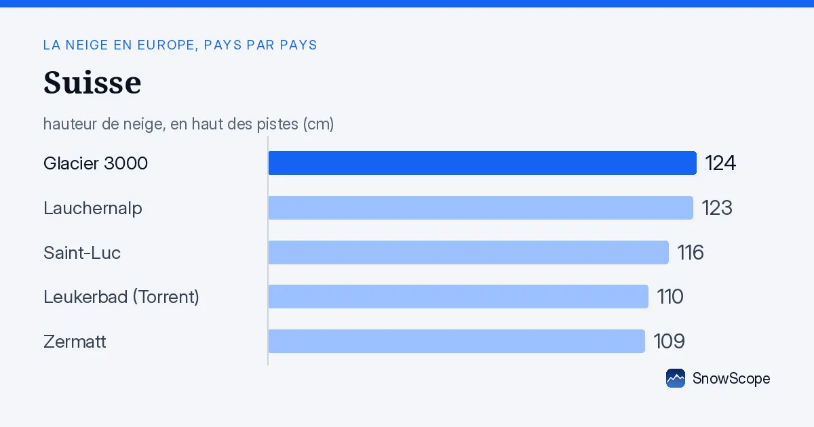
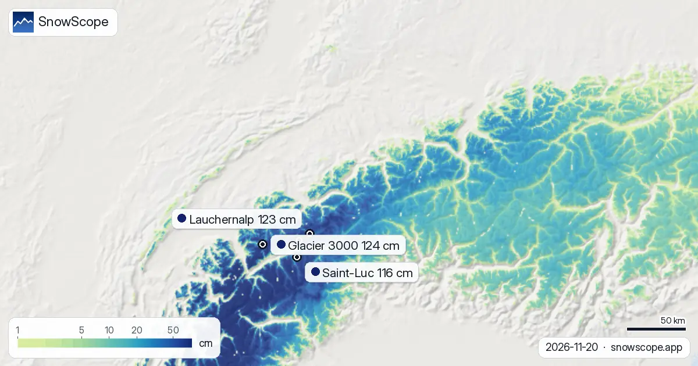

Suisse : les glaciers en tête, Glacier 3000 à 124 cm
Glacier 3000 affiche aujourd'hui une épaisseur de 124 cm, bien devant les autres stations d'altitude du pays. La zone glaciaire a capté le plus de neige lors de ce premier grand assaut saisonnier, avec 128 cm mesurés au cours des trois derniers jours.
Consultez les prévisions neige en temps réel pour Glacier 3000 sur l'application SnowScopeHauteurs de neige, alertes poudreuse et carte 3D, gratuitement.
Pourquoi les glaciers gagnent en novembre
L'altitude est décisive en début de saison. Glacier 3000, à 2 931 m, se situe dans la zone où la neige tient et s'accumule. Les Alpes valaisannes, où se trouve Glacier 3000, ont reçu 192 cm en 72 heures, bien plus que toute autre région de Suisse. L'Oberland bernois, avec Lauchernalp à 3 084 m, arrive en second avec 119 cm sur la même période.
La limite des neiges se situe aujourd'hui à 1 200 m, ce qui signifie que les vallées basses et les pentes de moyenne altitude sont encore largement nues. Entre 2 000 et 2 500 m, l'épaisseur moyenne est de 16 cm avec une couverture complète. Au-dessus de 2 500 m, la moyenne atteint 29 cm. Les glaciers, par définition, se situent au-dessus de ces altitudes et captent les premières vraies neiges de la saison.
| Station | Hauteur de neige | Neige fraîche, 72 h | Attendu, jours suivants | Sommet |
|---|---|---|---|---|
| Glacier 3000 | 124 cm | 128 cm | 86 cm | 2 931 m |
| Lauchernalp | 123 cm | 86 cm | 68 cm | 3 084 m |
| Saint-Luc | 116 cm | 84 cm | 52 cm | 2 973 m |
| Leukerbad (Torrent) | 110 cm | 82 cm | 61 cm | 2 596 m |
| Zermatt | 109 cm | 100 cm | 50 cm | 3 872 m |

Cinq stations avec le plus de neige actuellement
Glacier 3000 est en tête avec 124 cm. Lauchernalp, dans l'Oberland bernois, en totalise 123 cm à 3 084 m. Saint-Luc en Valais affiche 116 cm. Leukerbad (Torrent) atteint 110 cm, et Zermatt, le nom le plus célèbre, en a 109 cm. Les cinq sont au-dessus de 2 500 m.
Ce qui compte pour les prochains jours : Glacier 3000 gagnera encore 86 cm sur les trois prochains jours. Lauchernalp en attend 68 cm supplémentaires. Mais la tendance est claire : le terrain glaciaire de haute altitude continuera à s'éloigner des stations plus basses.

Bandes neigeuses : qui reçoit quoi selon l'altitude
Au-dessous de 1 000 m, pratiquement pas de neige. Entre 1 000 et 1 500 m, seulement 59 % de la zone est couverte et l'épaisseur moyenne n'est que de 2 cm. C'est la zone où se situent nombre de stations de vallée, et elles sont encore très limitées.
Le saut arrive à 1 500 m. Ici, la couverture neigeuse monte à 93 % et l'épaisseur atteint en moyenne 10 cm. À 2 000 m et au-dessus, la couverture est complète. Cette limite nette—la bande entre 1 500 et 2 000 m—est où la saison commence vraiment. Tout ce qui est au-dessus se construit rapidement. Tout ce qui est en dessous attend encore.
La couverture neigeuse du pays s'étend rapidement
La couverture neigeuse dans la région est passée de 16 170 km² il y a sept jours à 19 900 km² aujourd'hui. C'est 3 730 km² de terrain blanc nouveau en une semaine. Entre hier et aujourd'hui, le gain a été de 1 740 km². La part blanche de la Suisse atteint maintenant 64 %, contre 52 % il y a une semaine.
Sur nos 280 stations suivies, 224 ont maintenant une neige mesurable. Début novembre a apporté une couverture mince et des zones dénudées. L'assaut de cette semaine a changé la donne. Néanmoins, les rochers percent encore sur nombreuses pentes basses, et une neige fine peut les masquer. Les conditions d'début de saison exigent un choix de lignes prudent, en particulier hors-piste.
Ce qui vient ensuite
Demain, 22 novembre, sera la journée la plus enneigée de la prévision. Sur les trois prochains jours, les Alpes valaisannes et l'Oberland bernois connaîtront les chutes les plus importantes. Sur sept jours, le pays pourrait gagner 89 cm supplémentaires aux points les plus hauts.
Fin novembre, la deuxième semaine de données (28 novembre au 4 décembre) montre que la neige faiblira. Seulement 24 cm sont prévus pour cette semaine, contre 55 cm la première semaine complète à venir. L'assaut s'arrête, et la saison s'installe à un rythme plus lent.
Comment la Suisse se compare
L'Autriche, à l'est, affiche 44 % de couverture blanche et son leader (Rifflsee) en tient 120 cm. La France, à l'ouest, est à 14 % de couverture blanche avec Les Arcs à 166 cm, mais le tableau y est inégal. La couverture suisse de 64 % la place bien en avant pour cette date. La ceinture glaciaire en est la raison. L'Autriche a aussi des glaciers, mais le terrain de haute altitude suisse capture la première grande vague de tempête de la saison de manière plus complète.
Conseils aux skieurs
- Restez sur les pistes au-dessus de 2 000 m pour l'instant. Au-dessous de 1 500 m, la neige est fine (épaisseur moyenne de 2 à 10 cm) et les rochers affleurent. Glacier 3000 et Lauchernalp sont des choix plus sûrs en début de saison que les vallées basses.
- La neige fraîche ajoutera 38 cm demain (22 novembre) dans les zones de crête. Attendez-vous à des conditions souples et un risque d'avalanche. Consultez le bulletin officiel d'avalanche avant tout ski hors-piste.
- Les trois prochains jours favorisent les Alpes valaisannes (Glacier 3000, Zermatt, Saint-Luc) par rapport aux stations plus basses. Si vous cherchez de la neige profonde maintenant, allez haut et allez sud.
- Prévoyez 86 cm supplémentaires à Glacier 3000 dans les trois prochains jours. L'épaisseur d'début de saison augmentera rapidement aux stations glaciaires mais restera fine plus bas.
- Début décembre, l'apport de neige chute nettement. C'est la fenêtre pour skier la poudreuse fraîche dans les zones hautes avant que le rythme ne ralentisse.
À propos de ces chiffres
Les hauteurs de neige des stations sont la neige la plus épaisse sur le haut du domaine à la date indiquée ; ce sont des estimations pour une zone, pas une mesure en un point. Les prévisions peuvent changer. Consultez toujours le bulletin d'avalanche officiel avant le hors-piste.
Citer ce bulletin
Pour la recherche, l'enseignement ou la presse : chiffres et graphiques réutilisables librement sous CC BY 4.0 avec cette citation.
SnowScope (2026), Suisse : les glaciers en tête, Glacier 3000 à 124 cm, https://snowscope.app/blog/fr/2026/11/switzerland-glaciers-lead-20-november-2026.html, consulté le 2026-11-20
SnowScope (Atlas Labs). (2026, November 20). Suisse : les glaciers en tête, Glacier 3000 à 124 cm. SnowScope snow reports. https://snowscope.app/blog/fr/2026/11/switzerland-glaciers-lead-20-november-2026.html
BibTeX
@misc{snowscope2026switzerlandglacierslead2,
author = {{SnowScope (Atlas Labs)}},
title = {Suisse : les glaciers en tête, Glacier 3000 à 124 cm},
year = {2026},
month = nov,
howpublished = {\url{https://snowscope.app/blog/fr/2026/11/switzerland-glaciers-lead-20-november-2026.html}},
note = {Published 2026-11-21 11:04 UTC; accessed 2026-11-20}
}· CC BY 4.0 · Méthodes, données et outils →
Glacier 3000 : neige et température selon l'altitude, cet hiver vs l'hiver dernier (outils) →
Suivre Glacier 3000
Gratuit : un message quand la neige arrive, et la météo chaque matin.